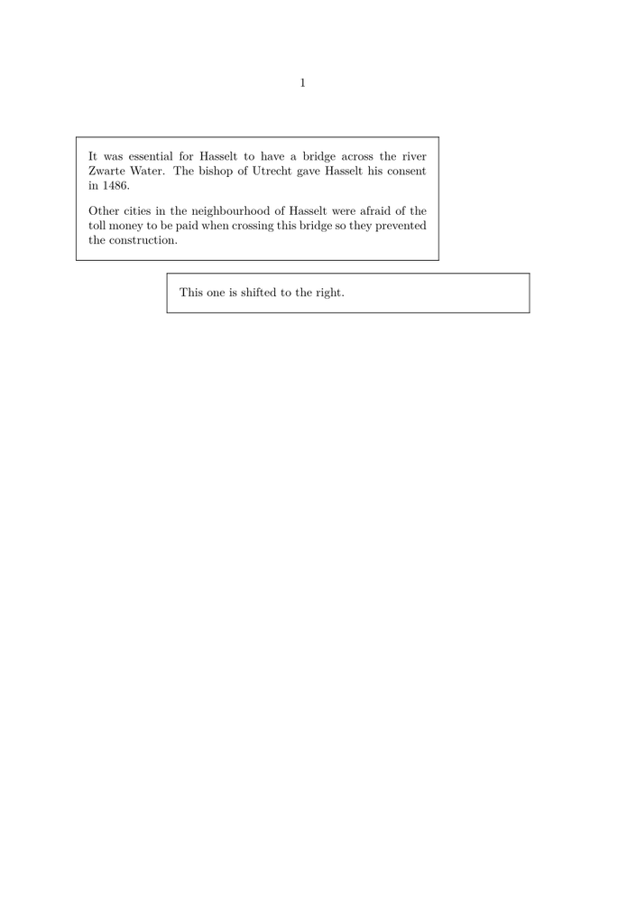

Contents
Summary
The instances of \startframedtext ... \stopframedtext are used for wrapping frames, margins and/or backgrounds around longer blocks of text.
Instances
| \startframedtext ... \stopframedtext | Like \framed, but bigger. |
Settings instance
| \startFRAMEDTEXT[...][...=...,...] ... \stopFRAMEDTEXT | |
| [...] | left right middle none |
| ...=...,... | inherits from \setupframedtext |
| Option | Explanation |
|---|---|
| set a horizontal placement, like in \setupalign | |
| left | left-aligned box |
| right | right-aligned box |
| middle | horizontally centered box |
| none | whatever the surrounding default is |
Description
While this is a very powerful way to add decorations to a bit of text, note that framedtexts do not break across pages. See
\starttextbackground
for a similar environment that will break across pages.
Examples
Example 1
-
\starttext \startframedtext[width=.8\makeupwidth] It was essential for Hasselt to have a bridge across the river Zwarte Water. The bishop of Utrecht gave Hasselt his consent in 1486. \blank Other cities in the neighbourhood of Hasselt were afraid of the toll money to be paid when crossing this bridge so they prevented the construction. \stopframedtext \startframedtext[right][width=.8\makeupwidth] This one is shifted to the right. \stopframedtext \stoptext
- 